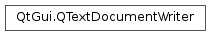

QTextDocumentWriter¶
Note
This class was introduced in Qt 4.5.
Detailed Description¶
The
PySide2.QtGui.QTextDocumentWriterclass provides a format-independent interface for writing aPySide2.QtGui.QTextDocumentto files or other devices.To write a document, construct a
PySide2.QtGui.QTextDocumentWriterobject with either a file name or a device object, and specify the document format to be written. You can construct a writer and set the format usingPySide2.QtGui.QTextDocumentWriter.setFormat()later.Call
PySide2.QtGui.QTextDocumentWriter.write()to write the document to the device. If the document is successfully written, this function returnstrue. However, if an error occurs when writing the document, it will return false.Call
PySide2.QtGui.QTextDocumentWriter.supportedDocumentFormats()for a list of formats thatPySide2.QtGui.QTextDocumentWritercan write.Since the capabilities of the supported output formats vary considerably, the writer simply outputs the appropriate subset of objects for each format. This typically includes the formatted text and images contained in a document.
-
class
PySide2.QtGui.QTextDocumentWriter¶ -
class
PySide2.QtGui.QTextDocumentWriter(device, format) -
class
PySide2.QtGui.QTextDocumentWriter(fileName[, format=QByteArray()]) Parameters: - format –
PySide2.QtCore.QByteArray - device –
PySide2.QtCore.QIODevice - fileName – unicode
Constructs an empty
PySide2.QtGui.QTextDocumentWriterobject. Before writing, you must callPySide2.QtGui.QTextDocumentWriter.setFormat()to set a document format, thenPySide2.QtGui.QTextDocumentWriter.setDevice()orPySide2.QtGui.QTextDocumentWriter.setFileName().Constructs a
PySide2.QtGui.QTextDocumentWriterobject to write to the givendevicein the document format specified byformat.Constructs an
PySide2.QtGui.QTextDocumentWriterobject that will write to a file with the namefileName, using the document format specified byformat. Ifformatis not provided,PySide2.QtGui.QTextDocumentWriterwill detect the document format by inspecting the extension offileName.- format –
-
PySide2.QtGui.QTextDocumentWriter.codec()¶ Return type: PySide2.QtCore.QTextCodecReturns the codec that is currently assigned to the writer.
-
PySide2.QtGui.QTextDocumentWriter.device()¶ Return type: PySide2.QtCore.QIODeviceReturns the device currently assigned, or 0 if no device has been assigned.
-
PySide2.QtGui.QTextDocumentWriter.fileName()¶ Return type: unicode If the currently assigned device is a
PySide2.QtCore.QFile, or ifPySide2.QtGui.QTextDocumentWriter.setFileName()has been called, this function returns the name of the file to be written to. In all other cases, it returns an empty string.
-
PySide2.QtGui.QTextDocumentWriter.format()¶ Return type: PySide2.QtCore.QByteArrayReturns the format used for writing documents.
-
PySide2.QtGui.QTextDocumentWriter.setCodec(codec)¶ Parameters: codec – PySide2.QtCore.QTextCodecSets the codec for this stream to
codec. The codec is used for encoding any data that is written. By default,PySide2.QtGui.QTextDocumentWriteruses UTF-8.
-
PySide2.QtGui.QTextDocumentWriter.setDevice(device)¶ Parameters: device – PySide2.QtCore.QIODeviceSets the writer’s device to the
devicespecified. If a device has already been set, the old device is removed but otherwise left unchanged.If the device is not already open,
PySide2.QtGui.QTextDocumentWriterwill attempt to open the device inQIODevice.WriteOnlymode by calling open().Note
This will not work for certain devices, such as
PySide2.QtCore.QProcess,PySide2.QtNetwork.QTcpSocketandPySide2.QtNetwork.QUdpSocket, where some configuration is required before the device can be opened.
-
PySide2.QtGui.QTextDocumentWriter.setFileName(fileName)¶ Parameters: fileName – unicode Sets the name of the file to be written to
fileName. Internally,PySide2.QtGui.QTextDocumentWriterwill create aPySide2.QtCore.QFileand open it inQIODevice.WriteOnlymode, and use this file when writing the document.
-
PySide2.QtGui.QTextDocumentWriter.setFormat(format)¶ Parameters: format – PySide2.QtCore.QByteArraySets the format used to write documents to the
formatspecified.formatis a case insensitive text string. For example:QTextDocumentWriter writer; writer.setFormat("odf"); // same as writer.setFormat("ODF");
You can call
PySide2.QtGui.QTextDocumentWriter.supportedDocumentFormats()for the full list of formatsPySide2.QtGui.QTextDocumentWritersupports.
-
static
PySide2.QtGui.QTextDocumentWriter.supportedDocumentFormats()¶ Return type: Returns the list of document formats supported by
PySide2.QtGui.QTextDocumentWriter.By default, Qt can write the following formats:
Format Description plaintext Plain text HTML HyperText Markup Language ODF OpenDocument Format
-
PySide2.QtGui.QTextDocumentWriter.write(document)¶ Parameters: document – PySide2.QtGui.QTextDocumentReturn type: PySide2.QtCore.boolWrites the given
documentto the assigned device or file and returnstrueif successful; otherwise returnsfalse.
-
PySide2.QtGui.QTextDocumentWriter.write(fragment) Parameters: fragment – PySide2.QtGui.QTextDocumentFragmentReturn type: PySide2.QtCore.boolWrites the document fragment specified by
fragmentto the assigned device or file and returnstrueif successful; otherwise returnsfalse.
© 2018 The Qt Company Ltd. Documentation contributions included herein are the copyrights of their respective owners. The documentation provided herein is licensed under the terms of the GNU Free Documentation License version 1.3 as published by the Free Software Foundation. Qt and respective logos are trademarks of The Qt Company Ltd. in Finland and/or other countries worldwide. All other trademarks are property of their respective owners.